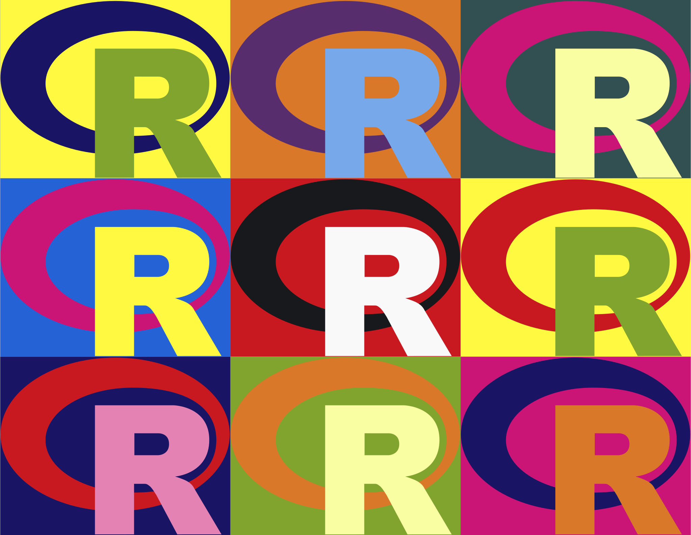
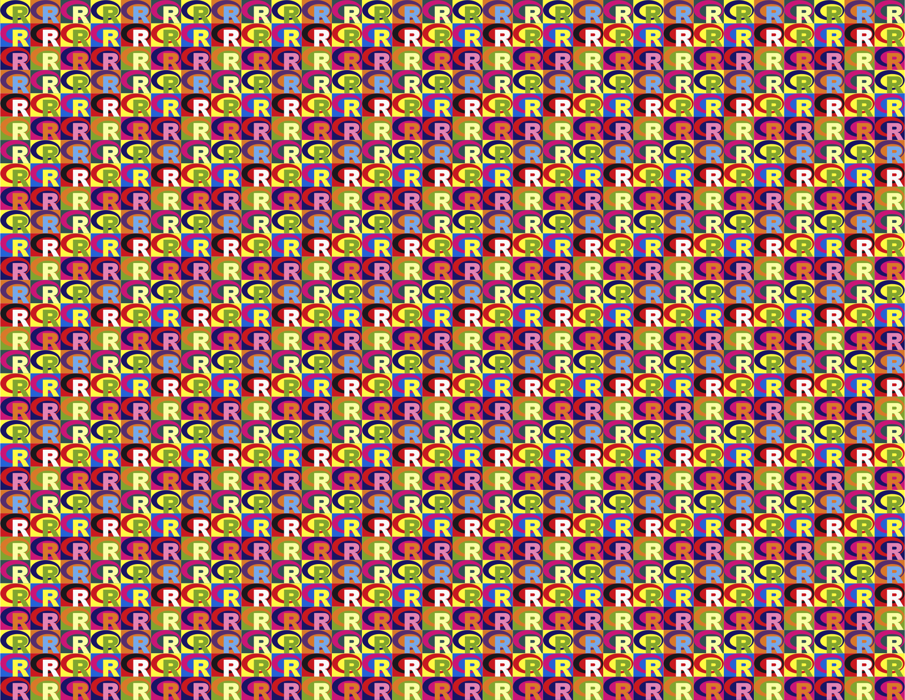

Logo
Here’s a quick script for creating our Warhol-esque R logo. We’ve adapted the offical R logo, which is under a CC-BY-SA 4.0 license.
This function sets up the colour scheme. You can change wcolors below to anything you want.
warhol_color <- function() {
if (!exists("current_wcolor")) {
current_wcolor <<- 0
} else {
current_wcolor <<- current_wcolor + 1
}
#wcolors <- c("red", "blue", "green", "yellow", "orange", "pink", "purple")
wcolors <- c(
"#FFF942", # yellow
"#191464", # dark blue
"#81A42F", # green
"#2562D6", # royal blue
"#CA1576", # hot pink
"#FFF942", # yellow
"#191464", # dark blue
"#C91920", # red
"#E382B3", # pink
"#D97829", # orange
"#572D6D", # purple
"#76A8EA", # light blue
"#C91920", # red
"#18191D", # black
"#F9F9F9", # white
"#81A42F", # green
"#D97829", # orange
"#FAFEA3", # light yellow
"#325052", # slate blue
"#CA1576", # hot pink
"#FAFEA3", # light yellow
"#FFF942", # yellow
"#C91920", # red
"#81A42F", # green
"#CA1576", # hot pink
"#191464", # dark blue
"#D97829" # orange
)
wcolors[current_wcolor%%length(wcolors)+1]
}warhol <- function(filename = "warhol.svg", rows = 3, cols = 3) {
logowidth <- 724
logoheight <- 561
svg<- paste0('<svg xmlns="http://www.w3.org/2000/svg"
xmlns:xlink="http://www.w3.org/1999/xlink"
preserveAspectRatio="xMidYMid"
width="', logowidth*cols, '" height="',logoheight*rows,'"
viewBox="0 0 ',logowidth*cols,' ',logoheight*rows,'">\n\n')
# define the R logo in SVG
svg <- paste0(svg, '<define>
<rect id="bg" width="',logowidth,'" height="',logoheight,'" fill-rule="evenodd"/>
<path id="halo" d="M361.453,485.937 C162.329,485.937 0.906,377.828 0.906,244.469
C0.906,111.109 162.329,3.000 361.453,3.000
C560.578,3.000 722.000,111.109 722.000,244.469
C722.000,377.828 560.578,485.937 361.453,485.937 ZM416.641,97.406
C265.289,97.406 142.594,171.314 142.594,262.484
C142.594,353.654 265.289,427.562 416.641,427.562
C567.992,427.562 679.687,377.033 679.687,262.484
C679.687,147.971 567.992,97.406 416.641,97.406 Z"
fill-rule="evenodd"/>
<path id="R" d="M550.000,377.000
C550.000,377.000 571.822,383.585 584.500,390.000
C588.899,392.226 596.510,396.668 602.000,402.500
C607.378,408.212 610.000,414.000 610.000,414.000
L696.000,559.000 L557.000,559.062 L492.000,437.000
C492.000,437.000 478.690,414.131 470.500,407.500
C463.668,401.969 460.755,400.000 454.000,400.000
C449.298,400.000 420.974,400.000 420.974,400.000
L421.000,558.974 L298.000,559.026 L298.000,152.938
L545.000,152.938 C545.000,152.938 657.500,154.967 657.500,262.000
C657.500,369.033 550.000,377.000 550.000,377.000
ZM496.500,241.024 L422.037,240.976 L422.000,310.026
L496.500,310.002 C496.500,310.002 531.000,309.895 531.000,274.877
C531.000,239.155 496.500,241.024 496.500,241.024 Z"
fill-rule="evenodd"/>
</define>')
current_wcolor <<- -1 # start colours at the beginning
for (x in seq(0, logowidth*(cols-1), by = logowidth)) {
for (y in seq(0, logoheight*(rows-1), by = logoheight)) {
svg <- paste0(svg, ' <g transform="translate(',x,',',y,')">\n')
svg <- paste0(svg, ' <use xlink:href="#bg" fill="',warhol_color(),'" />\n\n')
svg <- paste0(svg, ' <use xlink:href="#halo" fill="',warhol_color(),'" />\n\n')
svg <- paste0(svg, ' <use xlink:href="#R" fill="',warhol_color(),'" />\n\n')
svg <- paste0(svg, ' </g>\n\n')
}
}
svg <- paste0(svg, '</svg>')
write(svg, file = filename)
}Just run the following code to make a new logo:
warhol("images/logo_square.svg", 3,3)

You can make a square version
warhol("images/logo_wide.svg", 1,6)Or a wide version
warhol("images/logo_too_many.svg", 30,30)

Or even a version with 900 Rs